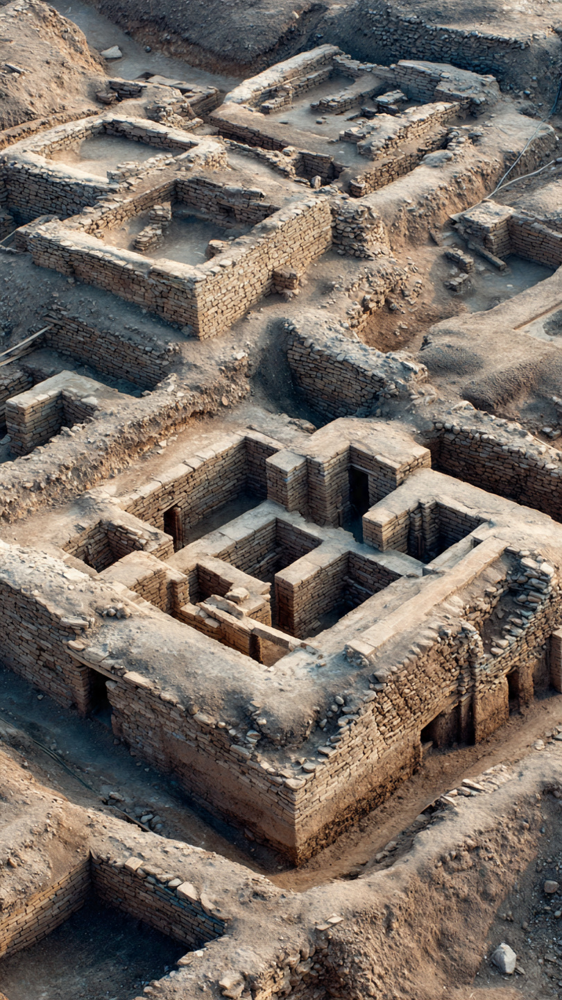
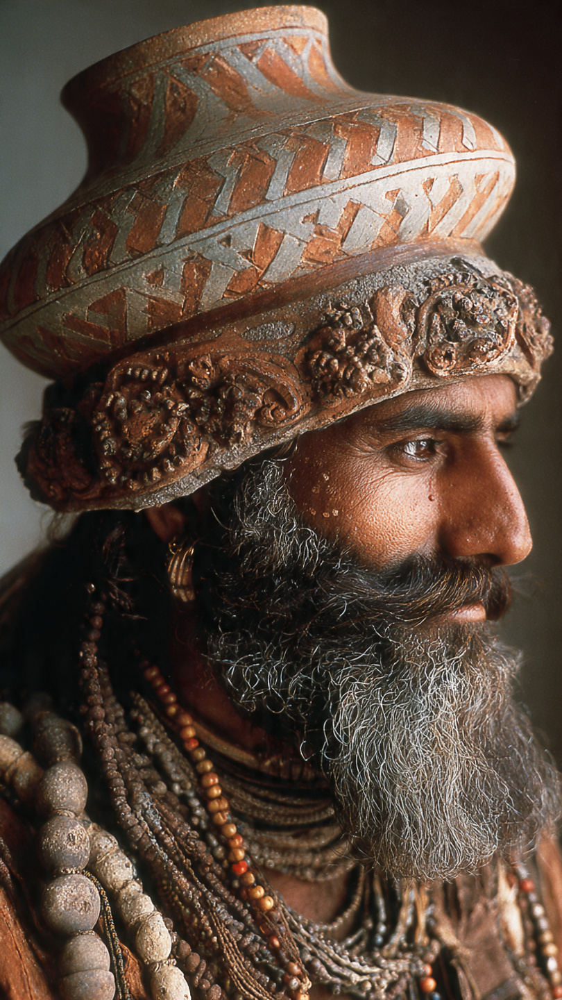
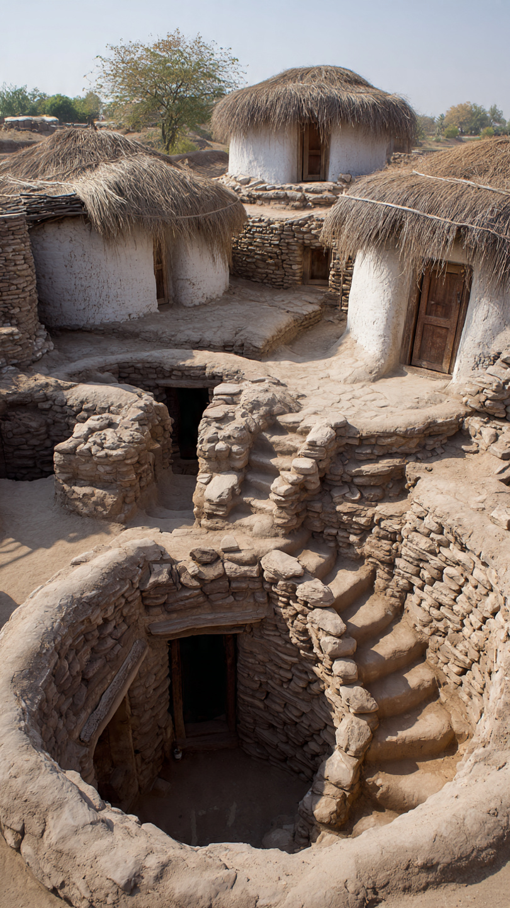
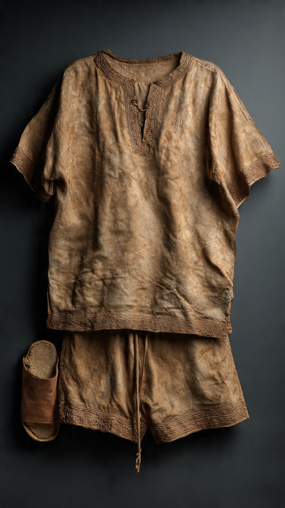

Introduction
The Harappan Civilization, also known as the Indus Valley Civilization, was one of the earliest and most advanced civilizations in the world. It developed around 2600 BCE and flourished in present-day India and Pakistan. The civilization is famous for its well-planned cities, drainage systems, trade, and architecture.


Major Cities
The Harappan Civilization had many important cities. Some of the most famous ones include Harappa, Mohenjo-daro, Lothal, Dholavira, and Kalibangan.
| City | Important Feature |
|---|---|
| Harappa | Granaries and seals |
| Mohenjo-daro | Great Bath and planned streets |
| Lothal | Dockyard and sea trade |
| Dholavira | Water reservoirs |
| Kalibangan | Fire altars and ploughed fields |
Harappan Homes
Harappan homes were built using baked bricks. Most houses had multiple rooms, kitchens, bathrooms, and even private wells. The houses were connected to covered drainage systems, showing the importance of cleanliness and city planning.

Clothing and Lifestyle
The people of the Harappan Civilization wore cotton clothes and loved ornaments made from gold, silver, shells, and beads. Men and women both wore jewelry. Children played with clay toys, carts, and dolls.

The Great Bath
The Great Bath at Mohenjo-daro is one of the most famous structures of the Harappan Civilization. It was built with bricks and waterproof materials. Historians believe it may have been used for ritual bathing and religious ceremonies.

Trade and Economy
The Harappans traded with other civilizations such as Mesopotamia. They exported cotton, beads, pottery, ivory, and precious stones. They used boats, ships, and bullock carts for transportation.
- Farming was the main occupation
- They grew wheat, barley, rice, and cotton
- Trade was done through land and sea routes
- They used standard weights and measures
Interesting Facts
- The Harappans were among the first people to grow cotton.
- They had advanced drainage systems.
- Most houses had bathrooms and wells.
- They built cities in a grid pattern.
- They used seals with animal symbols.
- Their script is still not fully understood.